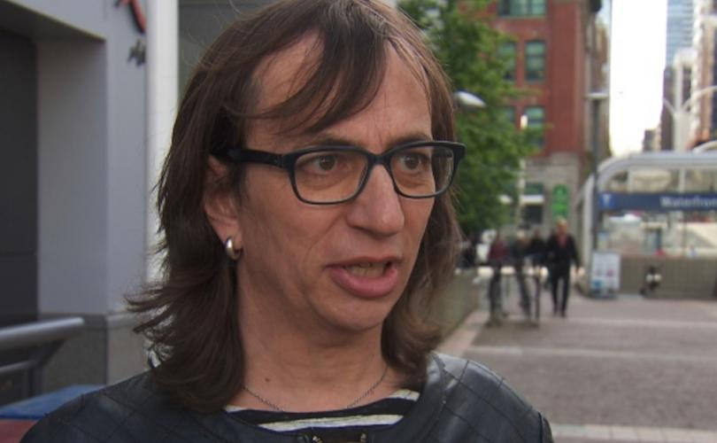
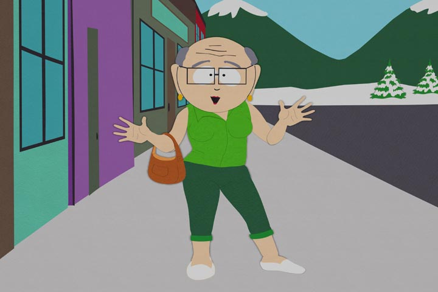

Ronan Oger "Not Born Male"
April 7th, 2021
Another story from way back when, 2017 in fact, but printing now because it's important.
Life Site News:
TDC_ARTICLE_START
VANCOUVER, British Columbia, September 26, 2017 (LifeSiteNews) — A Vancouver transgender “woman” wants the B.C. Human Rights Tribunal to alter an interim ruling to delete the statement he “was born as a male.”
“This is incorrect and is not set out in any of the Complainant’s materials,” wrote Susanna Quail, lawyer for Morgane, formerly known as Ronan Oger.
“Ms. Oger requests that this sentence be removed, or if it is relevant to specify Ms. Oger’s gender identity the sentence could be corrected to state ‘Ms. Oger is a transgender woman.’”
TDC_ARTICLE_STOP
Ronan "Morgane" Oger
Do they always have to turn themselves into such angelicly beautiful wahmens? How exactly are the born-with-vaginas wahmens supposed to compete against that? Unfair. I mean, what man wouldn't want to have sex with this Sports Illustrated model?
TDC_ARTICLE_START
A longtime LGBT activist and chair of the Trans Alliance Society, Oger helped draft the NDP’s transgender rights policy to add gender expression and identity to the Code, according to Metro News.
B.C.’s Liberal government passed a law doing so in July 2016.
TDC_ARTICLE_STOP

Man, BC provincial elections sure are gay as fuck. Imagine picking between the party represented by this "Morgane" Oger character (literally the vice-president of the BC NDP), and the party that... enables the exact same person. So real.
TDC_ARTICLE_START
In the course of pursuing Oger’s complaint, Human Rights Tribunal member Walter Rilkoff issued a September 8 ruling on interveners in the case.
“Ms. Oger was born as a male but identifies as a female,” Rilkoff noted in the ruling.
Oger’s lawyer, Quail, thereupon asked a case manager to “correct” the decision by deleting the paragraph, prompting an email exchange Whatcott published on his website Free North America.
The case manager replied Rilkoff “does not understand where the error is.”
“Ms. Oger was not born as a male,” Quail wrote.
TDC_ARTICLE_STOP
 Flabbergasted. Imagine being so insane that you call the judge who ruled in your favour to complain that he misgendered you as a baby. "I may have been born with a penis, but it was a female penis goddamnit!"
Flabbergasted. Imagine being so insane that you call the judge who ruled in your favour to complain that he misgendered you as a baby. "I may have been born with a penis, but it was a female penis goddamnit!"

Flabbergasted. Imagine being so insane that you call the judge who ruled in your favour to complain that he misgendered you as a baby. "I may have been born with a penis, but it was a female penis goddamnit!"